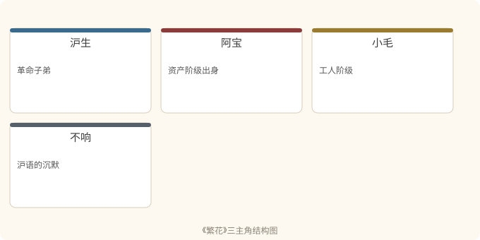

繁花
一、基本信息
| 作者 | 金宇澄 |
|---|---|
| 成书/出版 | 2012年8月《收获》长篇专号发表（中国作家网 C019）；2013年上海文艺出版社出版（C012 官方名单口径）；2015年获第九届茅盾文学奖（C012） 金宇澄：汇聚无数渺小个体的宏大叙事（中国作家网）（官方文学机构） |
| 国别/地区 | 中国 |
| 时代 | 现当代 · 当代 |
| 体裁 | 长篇小说 |
| 语言 | 汉语（沪语风格） |

《繁花》三主角结构图（主题·结构图）
二、创作背景
中国作家网（C019）：'2012年8月，《收获》杂志长篇专号问世，金宇澄的《上海阿宝》更名为《繁花》'；刊出后'好评不断，以至这期杂志脱销，只能加印'。
形成史：网络连载（暂名《上海阿宝》）→杂志版→图书版（C019：三个版本）。
三、内容脉络
'小说从沪生、阿宝、小毛三个不同家庭背景的少年展开叙述'（C019）——工人阶级是小毛，资产阶级是阿宝，革命子弟是沪生（C019 访谈概括）。
两代上海人：60年代与90年代交错——城市变迁三十年（通说待核）。
四、主要人物表
| 人物 | 身份 | 说明 |
|---|---|---|
| 沪生 | 革命子弟 | 三主角之一（C019） |
| 阿宝 | 资产阶级出身 | 三主角之一（C019） |
| 小毛 | 工人阶级 | 三主角之一（C019；小毛有真实原型——C019） |
五、主题与艺术特点
- 说书人姿态：'我采用苏州说书的方式，由一件事带出另一件事'（C019 金自述）。
- 沪语入小说：'改用上海话，根本不用动脑筋'（C019 金自述）。
- 无数渺小个体的宏大叙事（C019 标题语境）。
六、影响与评论
- 中国作家网官方名单：第九届（2011—2014）茅盾文学奖获奖作品、上海文艺出版社（C012）。
历届茅盾文学奖获奖作品一览（中国作家网）（官方文学机构） - 程永新评：吴语方言进入小说'效果都不如金宇澄这样完美顺畅'（C019）。
金宇澄：汇聚无数渺小个体的宏大叙事（中国作家网）（官方文学机构）
七、阅读建议
难点
- 沪语词汇——注释与朗读结合。
- 双线年代交错——注意章节标记。
- 《繁花》（上海文艺出版社，C012 官方名单口径）。
对照《长恨歌》：两种上海叙事（怀旧 vs 说书）。
八、待核实
- '不响'全书出现千余次说待核。
- 2013年3月单行本日期待核。
- 王家卫剧集改编细节待核。
本页主要来源
金宇澄的其他收录作品：繁花